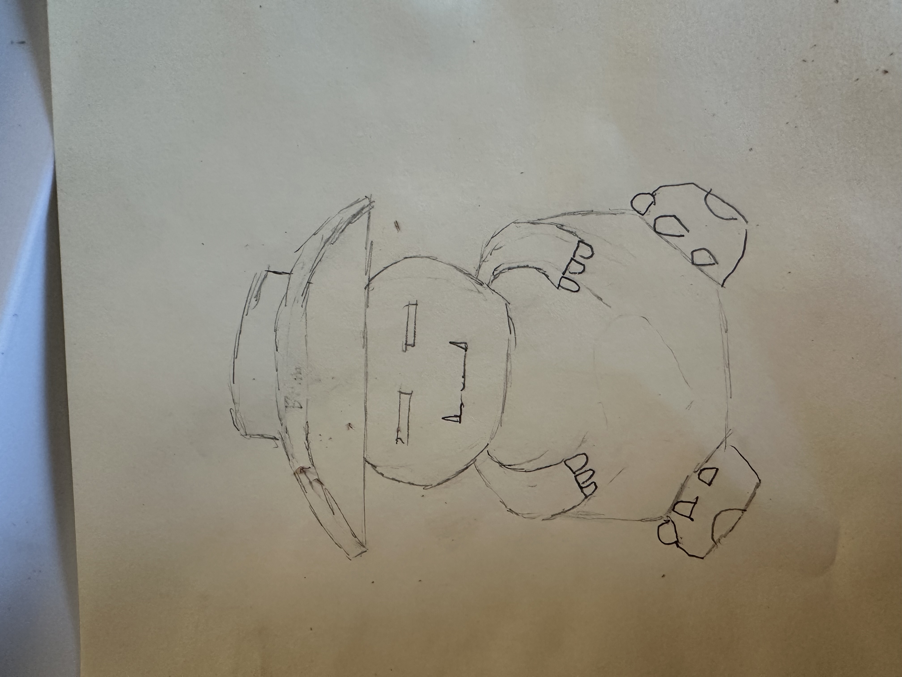
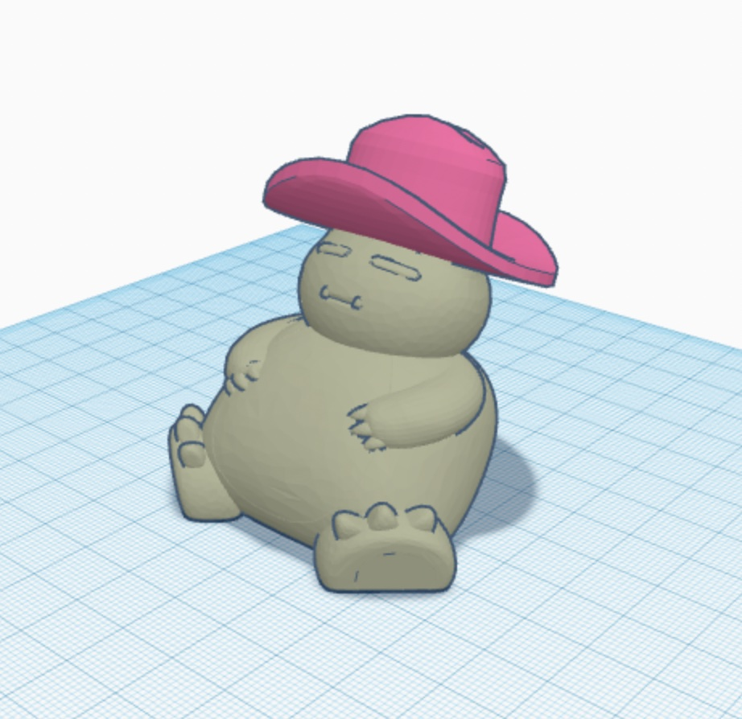
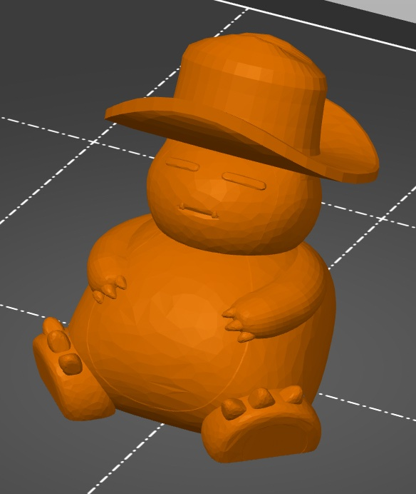
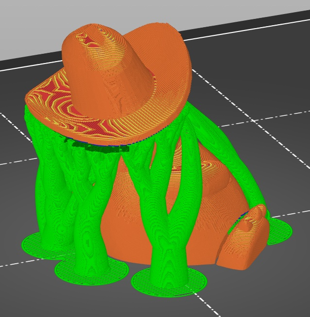
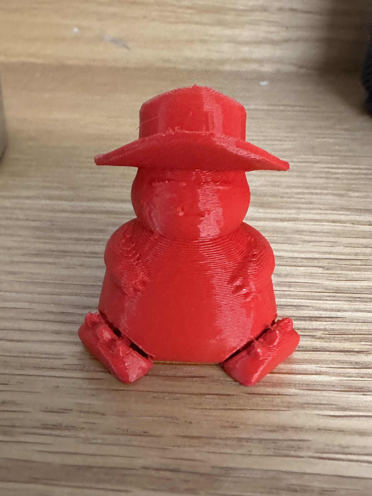
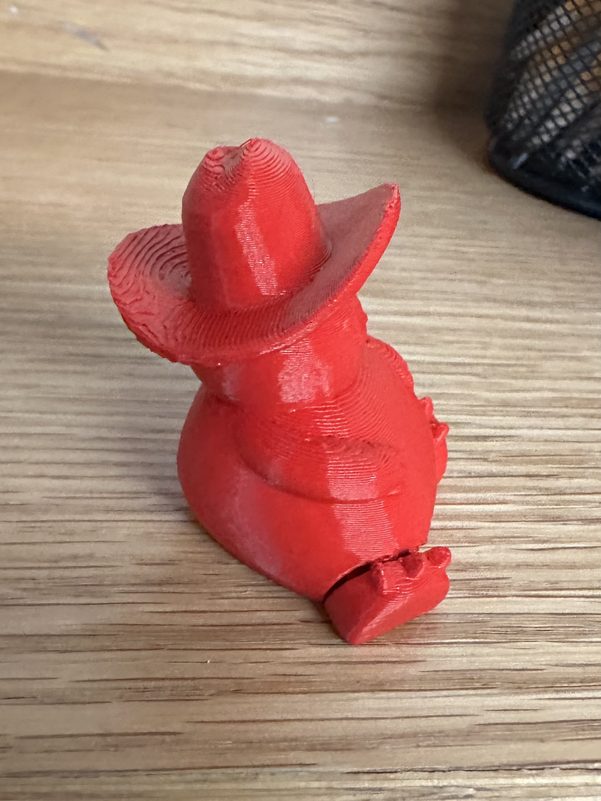
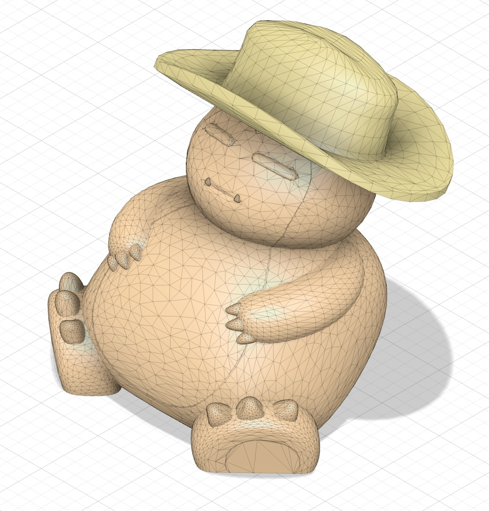
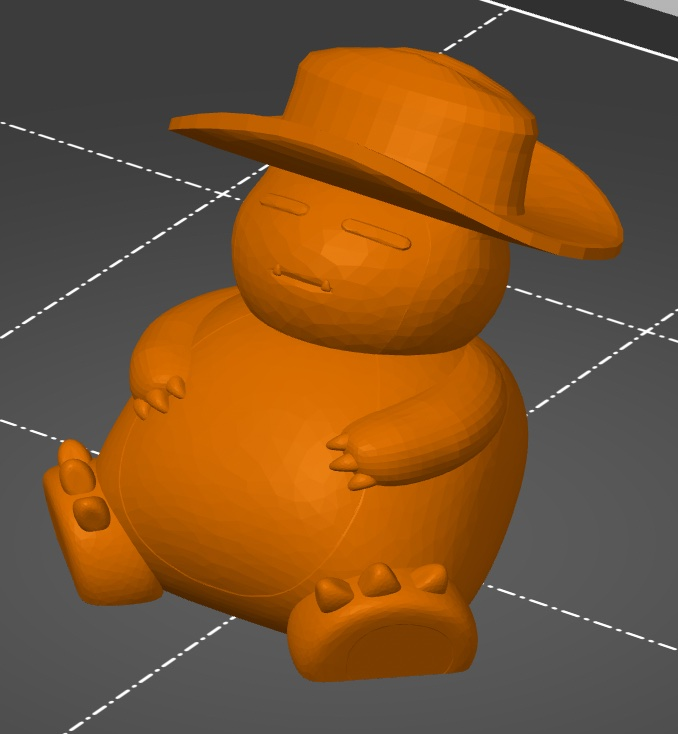
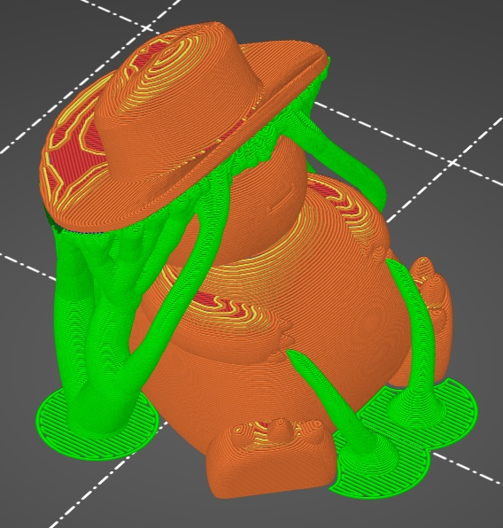

TinkerCAD
The combination that I chose was a model of Snorlax from the Pokemon series and a cowboy hat. I began by sketching out the design, where I simply placed the hat on top of the character’s head. It quickly became apparent that wearing the hat in a traditional way would create a large and awkward overhang, so I decided to rotate it horizontally.
Creating this in TinkerCAD felt extremely intuitive, where I was easily able to move, resize, rotate, and place the two objects together. After scaling each object to an appropriate size, I exported my model into Prusa Slicer. I used organic supports from the build plate only in order to support the overhang of the hat.
  The final product was good, but far from perfect. Most notable is the fact that both feet were very detached from the base model, something not present in the TinkerCAD diagram. I believe this was due to some error when importing the model into TinkerCAD, as this wasn't present in the Fusion model despite using the same STL file. There were also many stray print lines, something I am yet to diagnose. I believe I need to look more into the kinds of files I use, and how each file will react when being transported into CAD/CAMs and Prusa Slicer. Overall, it achieved my goal in creating a servicable final product, but much work is needed within the program in order to fully flesh out my design process.
 Fusion
I decided to do the same design in Fusion, where I aimed to iron out the issues and create an upgraded version of my previous design. Unlike TinkerCAD, Fusion was considerably harder to begin working in. After messing around with the program, I was able to utilize its movement features to much more precisely scale the hat to the model’s head, which would hopefully reduce overhang and look better. I exported this to Prusa Slicer, where I again used organic supports from the build plate.
  In comparison to the TinkerCAD print, the final product was much better. The issue with detached feet was not present, as well as typically a much smoother finish aside from a few major print lines. I believe these issues are due to errors in Fusion where I didn't simplify the mesh correctly, and I may have missed a step. This process was a great introduction to Fusion, and I definitely achieved my goal. Despite this, I seriously need to learn more about how STL files downloaded off external sources will interact within these programs, which should greatly improve my final products.